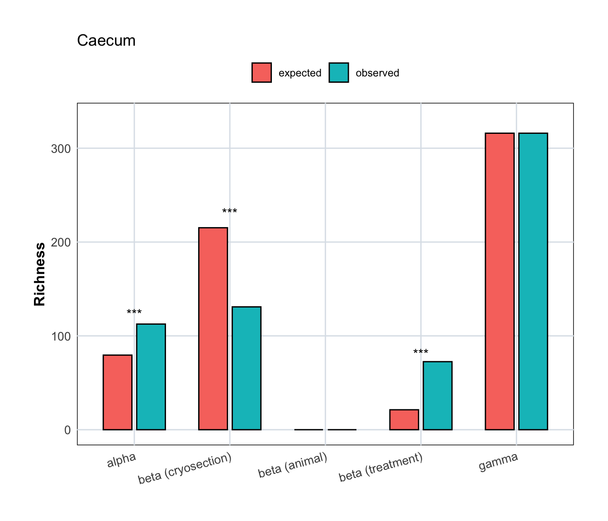
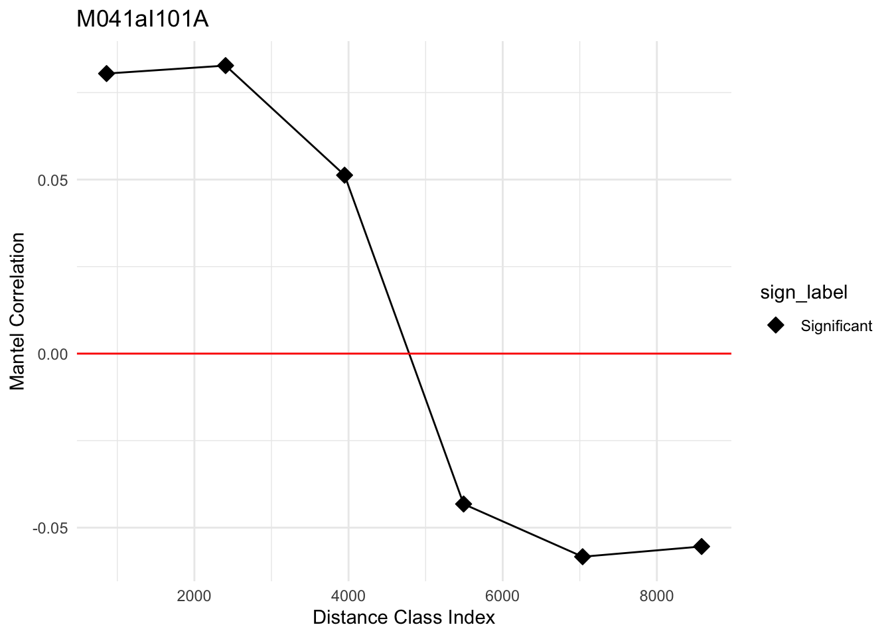
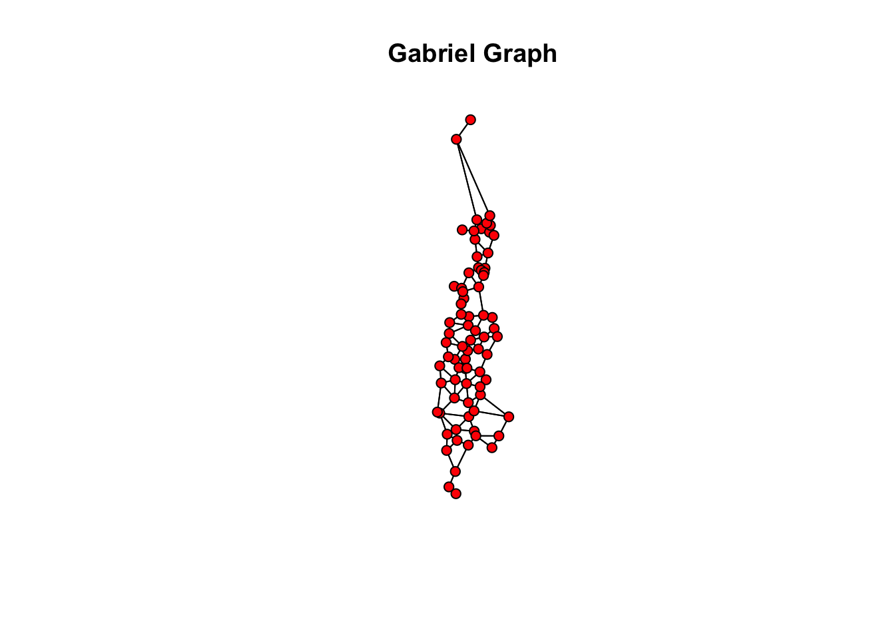

18 Spatial Analysis - Micro Samples
load("data/micro/sample_metadata.Rdata")
load("data/micro/counts.Rdata")
load("data/micro/seq_stats.Rdata")
load("data/data_colors.Rdata")Amalia’s comment: Code from Inaki, adapted by Antton and Carlotta. I tried to adapt it for Deliverable 6.3, not everything works yet.
18.1 Functions
18.1.1 spatial_cryosections
spatial_cryosections <- function(cryosection_list, metadata_df, comm_clr) {
cryosection_dfs <- list()
mantel_results <- list()
mantelcor_results <- list()
decay_dfs <- list()
distance_decay_plots <- list()
structure_results <- list()
for (cryosection in cryosection_list) {
# Filter metadata for this section
metadata_data <- metadata_df %>%
filter(cryosection == !!cryosection, !is.na(.data$Xcoord), !is.na(.data$Ycoord))
# Filter community data
comm_data <- comm_clr %>%
data.frame() %>%
rownames_to_column(var = "microsample") %>%
filter(microsample %in% metadata_data$microsample) %>%
column_to_rownames(var = "microsample")
cryosection_dfs[[cryosection]] <- list(
comm_clr = comm_data,
metadata = metadata_data
)
# Mantel correlogram
mantel <- vegan::mantel(
dist(comm_data),
dist(metadata_data[, c("Xcoord", "Ycoord")]),
permutations = 999
)
mantel_results[[cryosection]] <- mantel
# Mantel correlogram
correlog <- vegan::mantel.correlog(
D.eco = dist(comm_data),
D.geo = dist(metadata_data[, c("Xcoord", "Ycoord")]),
nperm = 999
)
mantelcor_results[[cryosection]] <- correlog
# Distance decay
toplot <- data.frame(
spat_dist = as.numeric(dist(metadata_data[, c("Xcoord", "Ycoord")])),
comm_dist = as.numeric(dist(comm_data))
)
decay_dfs[[cryosection]] <- toplot
# Plot
p <- ggplot(toplot, aes(x = spat_dist, y = comm_dist)) +
# geom_point() +
geom_smooth() +
xlab("Spatial distance (μm)") +
ylab("Aitchison \ndistance") +
theme_minimal() +
custom_ggplot_theme +
# ggtitle(paste("Distance Decay -", cryosection))
ggtitle(paste(cryosection))
distance_decay_plots[[cryosection]] <- p
# Print summary
# print(paste("Summary for", cryosection))
# print(summary(lm(comm_dist ~ spat_dist, data = toplot)))
#### Complex spatial structures
# set.seed(111)
# spat_SWNs<-listw.candidates(data.frame(metadata_data[,c("Xcoord","Ycoord")]),
# nb = c("gab"),
# weights = c("fdown", "fup"),
# y_fdown = c(2,5), y_fup = c(0.1,0.5))
# W_sel <- listw.select(comm_data, spat_SWNs, MEM.autocor = "positive",
# p.adjust = T, method="FWD")
# structure_results[[cryosection]] <- W_sel
}
return(list(
cryosection_dfs = cryosection_dfs,
mantel_results = mantel_results,
mantelcor_results = mantelcor_results,
decay_dfs = decay_dfs,
distance_decay_plots = distance_decay_plots,
structure_results = structure_results
))
}18.1.2 Additive diversity partitioning
# Function to calculate hierarchical additive partitioning
hier_adipart <- function(comm, hier, nsim = 999) {
comm_bin <- (as.matrix(comm) > 0) * 1
alpha_obs <- mean(rowSums(comm_bin))
get_level_richness <- function(fac) {
tapply(seq_len(nrow(comm_bin)), fac, function(idx) {
sum(colSums(comm_bin[idx, , drop = FALSE]) > 0)
}) |> mean()
}
level_names <- names(hier)
level_rich <- sapply(hier, get_level_richness)
gamma_obs <- sum(colSums(comm_bin) > 0)
# exactly L betas
betas <- c(level_rich[1] - alpha_obs, diff(level_rich))
names(betas) <- paste0("beta (", level_names, ")")
observed <- c(alpha = alpha_obs, betas, gamma = gamma_obs)
stat_fun <- function(x) {
x <- (x > 0) * 1
alpha <- mean(rowSums(x))
lvl <- sapply(hier, function(fac) {
tapply(seq_len(nrow(x)), fac, function(idx)
sum(colSums(x[idx, , drop = FALSE]) > 0)) |> mean()
})
gamma <- sum(colSums(x) > 0)
betas <- c(lvl[1] - alpha, diff(lvl)) # ✅ no gamma - last_level
names(betas) <- paste0("beta (", level_names, ")")
c(alpha = alpha, betas, gamma = gamma)
}
sim <- oecosimu(comm_bin, stat_fun, method = "r2dtable", nsimul = nsim)
tibble::tibble(
component = names(observed),
observed = as.numeric(observed),
expected = as.numeric(sim$oecosimu$mean),
pval = as.numeric(sim$oecosimu$pval)
)
}
plot_hier_adipart <- function(res, title = NULL) {
p_to_stars <- function(p) case_when(
p <= 0.001 ~ "***",
p <= 0.01 ~ "**",
p <= 0.05 ~ "*",
TRUE ~ ""
)
res_long <- res %>%
pivot_longer(c(observed, expected), names_to = "type", values_to = "value") %>%
mutate(
component = factor(
component,
levels = c("alpha",
"beta (cryosection)",
"beta (animal)",
"beta (treatment)",
"gamma")
)
)
ggplot(res_long, aes(x = component, y = value, fill = type)) +
geom_col(position = position_dodge(width = 0.7), width = 0.6, color = "black") +
geom_text(data = res, aes(x = component,
y = pmax(observed, expected) * 1.05,
label = p_to_stars(pval)),
inherit.aes = FALSE, vjust = 0) +
labs(x = NULL, y = "Richness", fill = NULL, title = title) +
theme_minimal(base_size = 11) +
theme(axis.text.x = element_text(angle = 15, hjust = 1),
legend.position = "top")
}18.2 Load data
metadata <- plot_data_stats %>%
filter(
treatment == "TM3",
age_category == "a",
type_simple %in% c("P"),
filter_status %in% c("Retained by filtering"),
!is.na(Xcoord))
comm_data <- genome_counts_filt_30_zerosrem %>%
select(genome, metadata$microsample) %>%
t() %>%
data.frame() %>%
row_to_names(row_number = 1) %>%
mutate(across(everything(), as.numeric))
# table(rowSums(comm_data) > 0)
# all(metadata$microsample == rownames(comm_data))
# table(is.na(comm_data))
# table(metadata$section, metadata$cryosection)
comm_ca <- comm_data[, colSums(comm_data) > 0]
metadata_ca <- metadata
table(metadata$section, metadata$cryosection)
M041aI101A M042aI101A
Caecum right 76 83
M041a M042a
Caecum right 76 8318.2.0.1 Transform the data for posterior multivariate analyses
# Store original dimensions
original_rows <- nrow(comm_ca)
original_cols <- ncol(comm_ca)
comm_ca_zeroRepl <- cmultRepl(comm_ca, method = "GBM", output = "prop", z.warning = 0.95, z.delete = TRUE)No. adjusted imputations: 4931 # Print removed rows and columns
removed_rows <- original_rows - nrow(comm_ca_zeroRepl)
removed_cols <- original_cols - ncol(comm_ca_zeroRepl)
cat("Rows (samples) removed:", removed_rows, "\n")Rows (samples) removed: 16 Columns (taxa) removed: 59 metadata_ca_clr <- metadata_ca[metadata_ca$microsample %in% rownames(comm_ca_zeroRepl), ]
clr_transform <- function(x) {
log(x) - mean(log(x), na.rm = TRUE)
}
comm_ca_clr <- data.frame(t(apply(comm_ca_zeroRepl, 1, clr_transform)))# Ensure hierarchy variables are factors, in order: cryosection (lowest), animal, treatment (highest)
hier_ca <- metadata_ca %>%
transmute(
cryosection = factor(cryosection),
animal = factor(animal),
treatment = factor(treatment)
)# Suppose comm_ca is your samples x genomes matrix
# and hier_ca is your data frame with cryosection, animal, treatment (in order lowest → highest)
res_ca <- hier_adipart(comm_ca, hier_ca, nsim = 999)
print(res_ca)# A tibble: 5 × 4
component observed expected pval
<chr> <dbl> <dbl> <dbl>
1 alpha 113. 79.5 0.001
2 beta (cryosection) 131. 215. 0.001
3 beta (animal) 0 0 1
4 beta (treatment) 72.5 21.3 0.001
5 gamma 316 316 1 
18.2.0.1.1 Ceacum Cryosection
cryosections = metadata %>%
distinct(cryosection) %>%
pull(cryosection)
results_ca <- spatial_cryosections(
cryosection_list = cryosections,
metadata_df = metadata_ca_clr,
comm_clr = comm_ca_clr
)18.2.0.1.1.1 Mantel test
$M042aI101A
Mantel statistic based on Pearson's product-moment correlation
Call:
vegan::mantel(xdis = dist(comm_data), ydis = dist(metadata_data[, c("Xcoord", "Ycoord")]), permutations = 999)
Mantel statistic r: 0.07512
Significance: 0.097
Upper quantiles of permutations (null model):
90% 95% 97.5% 99%
0.0740 0.0965 0.1138 0.1450
Permutation: free
Number of permutations: 999
$M041aI101A
Mantel statistic based on Pearson's product-moment correlation
Call:
vegan::mantel(xdis = dist(comm_data), ydis = dist(metadata_data[, c("Xcoord", "Ycoord")]), permutations = 999)
Mantel statistic r: 0.1785
Significance: 0.007
Upper quantiles of permutations (null model):
90% 95% 97.5% 99%
0.0803 0.1108 0.1293 0.1627
Permutation: free
Number of permutations: 99918.2.0.1.1.2 Mantel Correlogram Stat
$M042aI101A
Mantel Correlogram Analysis
Call:
vegan::mantel.correlog(D.eco = dist(comm_data), D.geo = dist(metadata_data[, c("Xcoord", "Ycoord")]), nperm = 999)
class.index n.dist Mantel.cor Pr(Mantel) Pr(corrected)
D.cl.1 3.8591e+02 2.1200e+02 3.2274e-02 0.020 0.020 *
D.cl.2 1.1068e+03 7.2800e+02 5.3378e-02 0.010 0.020 *
D.cl.3 1.8277e+03 8.8200e+02 2.2039e-02 0.201 0.201
D.cl.4 2.5485e+03 1.0420e+03 1.8137e-02 0.237 0.402
D.cl.5 3.2694e+03 9.9600e+02 -5.4002e-03 0.411 0.603
D.cl.6 3.9903e+03 8.2400e+02 -3.7989e-02 0.030 0.120
D.cl.7 4.7112e+03 6.9200e+02 -4.9872e-02 0.018 0.108
D.cl.8 5.4320e+03 5.2000e+02 NA NA NA
D.cl.9 6.1529e+03 2.8200e+02 NA NA NA
D.cl.10 6.8738e+03 1.9600e+02 NA NA NA
D.cl.11 7.5947e+03 7.6000e+01 NA NA NA
D.cl.12 8.3156e+03 2.2000e+01 NA NA NA
D.cl.13 9.0364e+03 6.0000e+00 NA NA NA
---
Signif. codes: 0 '***' 0.001 '**' 0.01 '*' 0.05 '.' 0.1 ' ' 1
$M041aI101A
Mantel Correlogram Analysis
Call:
vegan::mantel.correlog(D.eco = dist(comm_data), D.geo = dist(metadata_data[, c("Xcoord", "Ycoord")]), nperm = 999)
class.index n.dist Mantel.cor Pr(Mantel) Pr(corrected)
D.cl.1 8.6026e+02 6.3200e+02 8.0461e-02 0.007 0.007 **
D.cl.2 2.4044e+03 9.0600e+02 8.2752e-02 0.012 0.014 *
D.cl.3 3.9485e+03 6.6400e+02 5.1263e-02 0.013 0.024 *
D.cl.4 5.4926e+03 5.8000e+02 -4.3210e-02 0.035 0.036 *
D.cl.5 7.0367e+03 3.9400e+02 -5.8352e-02 0.017 0.048 *
D.cl.6 8.5808e+03 2.2800e+02 -5.5414e-02 0.035 0.070 .
D.cl.7 1.0125e+04 1.7200e+02 NA NA NA
D.cl.8 1.1669e+04 1.0600e+02 NA NA NA
D.cl.9 1.3213e+04 5.2000e+01 NA NA NA
D.cl.10 1.4757e+04 2.0000e+01 NA NA NA
D.cl.11 1.6301e+04 2.0000e+01 NA NA NA
D.cl.12 1.7845e+04 6.0000e+00 NA NA NA
---
Signif. codes: 0 '***' 0.001 '**' 0.01 '*' 0.05 '.' 0.1 ' ' 118.2.0.1.1.3 Mantel Correlogram Plot
mantel_ca_grob <- ggplot(
data.frame(results_ca$mantelcor_results$M041aI101A$mantel.res) %>%
mutate(sign_label = ifelse(`Pr.Mantel.` <= 0.05, "Significant", "Not significant")) %>%
filter(!is.na(Mantel.cor)),
aes(x = class.index, y = Mantel.cor)
) +
geom_point(aes(fill = sign_label), shape = 23, size = 3) +
geom_line() +
scale_fill_manual(values = c("Significant" = "black", "Not significant" = "white")) +
labs(
title = "M041aI101A",
x = "Distance Class Index",
y = "Mantel Correlation",
color = "Significance"
) +
geom_hline(yintercept = 0, color = "red") +
theme_minimal()
custom_ggplot_theme +
theme(legend.position = "none")List of 13
$ axis.title :List of 11
..$ family : NULL
..$ face : chr "bold"
..$ colour : NULL
..$ size : num 12
..$ hjust : NULL
..$ vjust : NULL
..$ angle : NULL
..$ lineheight : NULL
..$ margin : NULL
..$ debug : NULL
..$ inherit.blank: logi FALSE
..- attr(*, "class")= chr [1:2] "element_text" "element"
$ axis.text :List of 11
..$ family : NULL
..$ face : NULL
..$ colour : NULL
..$ size : num 10
..$ hjust : NULL
..$ vjust : NULL
..$ angle : NULL
..$ lineheight : NULL
..$ margin : NULL
..$ debug : NULL
..$ inherit.blank: logi FALSE
..- attr(*, "class")= chr [1:2] "element_text" "element"
$ panel.background :List of 5
..$ fill : chr "white"
..$ colour : NULL
..$ linewidth : NULL
..$ linetype : NULL
..$ inherit.blank: logi FALSE
..- attr(*, "class")= chr [1:2] "element_rect" "element"
$ panel.spacing : 'simpleUnit' num 0.1lines
..- attr(*, "unit")= int 3
$ panel.grid.major :List of 6
..$ colour : chr "#dde3e9"
..$ linewidth : NULL
..$ linetype : NULL
..$ lineend : NULL
..$ arrow : logi FALSE
..$ inherit.blank: logi FALSE
..- attr(*, "class")= chr [1:2] "element_line" "element"
$ panel.grid.minor : list()
..- attr(*, "class")= chr [1:2] "element_blank" "element"
$ plot.margin : 'simpleUnit' num [1:4] 1cm 1cm 1cm 1cm
..- attr(*, "unit")= int 1
$ strip.background :List of 5
..$ fill : chr "#dde3e9"
..$ colour : chr "white"
..$ linewidth : num 0.8
..$ linetype : NULL
..$ inherit.blank: logi FALSE
..- attr(*, "class")= chr [1:2] "element_rect" "element"
$ strip.placement : chr "outside"
$ strip.text :List of 11
..$ family : NULL
..$ face : chr "bold"
..$ colour : chr "black"
..$ size : num 8
..$ hjust : NULL
..$ vjust : NULL
..$ angle : NULL
..$ lineheight : NULL
..$ margin : NULL
..$ debug : NULL
..$ inherit.blank: logi FALSE
..- attr(*, "class")= chr [1:2] "element_text" "element"
$ strip.text.y.left :List of 11
..$ family : NULL
..$ face : NULL
..$ colour : NULL
..$ size : NULL
..$ hjust : NULL
..$ vjust : NULL
..$ angle : num 0
..$ lineheight : NULL
..$ margin : NULL
..$ debug : NULL
..$ inherit.blank: logi FALSE
..- attr(*, "class")= chr [1:2] "element_text" "element"
$ strip.text.y.right:List of 11
..$ family : NULL
..$ face : NULL
..$ colour : NULL
..$ size : NULL
..$ hjust : NULL
..$ vjust : NULL
..$ angle : num 0
..$ lineheight : NULL
..$ margin : NULL
..$ debug : NULL
..$ inherit.blank: logi FALSE
..- attr(*, "class")= chr [1:2] "element_text" "element"
$ legend.position : chr "none"
- attr(*, "class")= chr [1:2] "theme" "gg"
- attr(*, "complete")= logi FALSE
- attr(*, "validate")= logi TRUE
18.3 Extended RLQ analysis
On cryosections with a signal
# comm_co_G121eO301A <- results_co$cryosection_dfs[[cryosection]]$comm_clr
# metadata_co_G121eO301A <- results_co$cryosection_dfs[[cryosection]]$metadata
selected_cryosection = "M041aI101A"
comm_ca_cryosection <- comm_data[metadata$cryosection == selected_cryosection, ]
comm_ca_cryosection <- comm_ca_cryosection[, colSums(comm_ca_cryosection) > 0]
metadata_ca_cryosection <- metadata[metadata$cryosection == selected_cryosection, ]
comm_ca_cryosection <- comm_ca_cryosection %>%
as.data.frame() %>%
rownames_to_column(var = "microsample") %>%
bind_cols(metadata_ca_cryosection) %>%
select(contains("bin_"))
comp <- decostand(comm_ca_cryosection, MARGIN = 1, method = "hellinger") # Standardize composition by rows
colnames(comp) <- gsub("\\.", ":", names(comp))
env <- data.frame(
log_seq_counts = log(metadata_ca_cryosection$total_sequences_after_trim),
div = rowSums(comp > 0)
) # Environmental matrix
genome_gifts <- genome_gifts[rownames(genome_gifts) %in% colnames(comp), ]
genome_funct <- genome_gifts %>%
data.frame() %>%
rownames_to_column(var = "id") %>% # Preserve row names as a column
pivot_longer(-id, names_to = "column", values_to = "value") %>% # Reshape to long format
mutate(group = substr(column, 1, 3)) %>% # Extract the first 3 characters of column names
group_by(id, group) %>% # Group by row (id) and prefix
summarise(mean_value = mean(value, na.rm = TRUE), .groups = "drop") %>% # Calculate rowMeans for each group
pivot_wider(names_from = group, values_from = mean_value) %>% # Reshape back to wide format
column_to_rownames(var = "id")
genome_funct <- genome_funct[, -c(19:21)]
phy <- genome_tree # Phylogenetic tree constructed with Phylomatic V3 + Phylocom
phy <- drop.tip(phy, setdiff(phy$tip.label, rownames(genome_funct)))
spa <- metadata_ca_cryosection[, c("Xcoord", "Ycoord")] # Matrix of X Y spatial coordinates
comp <- comp[, match(phy$tip.label, colnames(comp))]
genome_funct <- genome_funct[match(phy$tip.label, rownames(genome_funct)), ]
mean(phy$tip.label == colnames(comp))[1] 1# Change the phylogenetic tree (an object of the class "phylo") into an object of the class "phylog", used by ade4
phylog <- newick2phylog(write.tree(phy)) # => "phylog" class
colnames(comp) <- gsub(":", "_", colnames(comp))
rownames(genome_funct) <- gsub(":", "_", rownames(genome_funct))18.3.0.0.0.0.1 Correspondence analysis of the composition matrix
Class: coa dudi
Call: dudi.coa(df = comp, scannf = FALSE, nf = 108)
Total inertia: 1.728
Eigenvalues:
Ax1 Ax2 Ax3 Ax4 Ax5
0.22286 0.19236 0.11452 0.08660 0.07086
Projected inertia (%):
Ax1 Ax2 Ax3 Ax4 Ax5
12.897 11.132 6.627 5.011 4.100
Cumulative projected inertia (%):
Ax1 Ax1:2 Ax1:3 Ax1:4 Ax1:5
12.90 24.03 30.66 35.67 39.77
(Only 5 dimensions (out of 74) are shown)18.3.0.0.0.2 Gabriel graph
Neighbour list object:
Number of regions: 76
Number of nonzero links: 250
Percentage nonzero weights: 4.328255
Average number of links: 3.289474 # Spatial autocorrelation in diversity and sequence count distribution
sp.correlogram(nb1, log(env$div), order = 8, method = "I")Spatial correlogram for log(env$div)
method: Moran's I
estimate expectation variance standard deviate Pr(I) two sided
1 (76) -0.0418637 -0.0133333 0.0081748 -0.3156 0.752343
2 (76) -0.0409739 -0.0133333 0.0047575 -0.4007 0.688614
3 (76) 0.0893327 -0.0133333 0.0037074 1.6861 0.091772 .
4 (76) 0.1660184 -0.0133333 0.0035245 3.0210 0.002519 **
5 (76) -0.0545644 -0.0133333 0.0037651 -0.6720 0.501615
6 (76) -0.0538944 -0.0133333 0.0041481 -0.6298 0.528840
7 (76) -0.0106319 -0.0133333 0.0045015 0.0403 0.967882
8 (76) -0.1052143 -0.0133333 0.0048664 -1.3171 0.187802
---
Signif. codes: 0 '***' 0.001 '**' 0.01 '*' 0.05 '.' 0.1 ' ' 1Spatial correlogram for env$log_seq_counts
method: Moran's I
estimate expectation variance standard deviate Pr(I) two sided
1 (76) -0.01329967 -0.01333333 0.00835172 0.0004 0.9997
2 (76) 0.05096863 -0.01333333 0.00486022 0.9224 0.3563
3 (76) 0.02002293 -0.01333333 0.00378753 0.5420 0.5878
4 (76) -0.03582229 -0.01333333 0.00360057 -0.3748 0.7078
5 (76) -0.07307632 -0.01333333 0.00384606 -0.9633 0.3354
6 (76) 0.00052658 -0.01333333 0.00423725 0.2129 0.8314
7 (76) -0.08211439 -0.01333333 0.00459816 -1.0143 0.3104
8 (76) -0.10034643 -0.01333333 0.00497085 -1.2342 0.2171Characteristics of weights list object:
Neighbour list object:
Number of regions: 76
Number of nonzero links: 250
Percentage nonzero weights: 4.328255
Average number of links: 3.289474
Weights style: W
Weights constants summary:
n nn S0 S1 S2
W 76 5776 76 50.48611 311.9639
[1] "nb"# [1] "nb"
# This is the Gabriel graph -the graph that in this case defines which points
# are connected
# The matrix of spatial variables is obtained as the eigenvectors of a
# neighbour matrix. This matrix is analysed by principal component analysis.
nb1.neigh <- nb2neig(nb1)
vecspa <- scores.neig(nb1.neigh)
pcaspa <- dudi.pca(vecspa, coacomp$lw, scan = FALSE, nf = ncol(vecspa))
summary(pcaspa)Class: pca dudi
Call: dudi.pca(df = vecspa, row.w = coacomp$lw, scannf = FALSE, nf = ncol(vecspa))
Total inertia: 75
Eigenvalues:
Ax1 Ax2 Ax3 Ax4 Ax5
1.614 1.600 1.565 1.508 1.479
Projected inertia (%):
Ax1 Ax2 Ax3 Ax4 Ax5
2.152 2.133 2.086 2.010 1.971
Cumulative projected inertia (%):
Ax1 Ax1:2 Ax1:3 Ax1:4 Ax1:5
2.152 4.285 6.371 8.382 10.353
(Only 5 dimensions (out of 75) are shown)18.3.0.0.0.3 PCA analysis of the env matrix
Class: pca dudi
Call: dudi.pca(df = env, row.w = coacomp$lw, scannf = FALSE, nf = 2)
Total inertia: 2
Eigenvalues:
Ax1 Ax2
1.6984 0.3016
Projected inertia (%):
Ax1 Ax2
84.92 15.08
Cumulative projected inertia (%):
Ax1 Ax1:2
84.92 100.00 18.3.0.0.0.4 The distances between species based on their biological traits, analyzed by PCoA.
I will set these eval=FALSE as I get an error and I do not have time to troubleshoot yet.
# Distance matrices for traits separately
listdis <- ldist.ktab(ktab.list.df(list(genome_funct)), c("Q"), scan = FALSE)
# choose 1
# Distance matrix for traits together
disT <- dist.ktab(ktab.list.df(list(genome_funct)), c("Q"), scan = FALSE)
# choose 1
pcotraits <- dudi.pco(disT, coacomp$cw, full = TRUE)
summary(pcotraits)
# n_dis <- attr(disT, "Size") %||% nrow(as.matrix(disT))
# length(coacomp$cw); length(coacomp$lw); n_dis
# summary(coacomp$cw); summary(coacomp$lw)18.3.0.0.0.6 Extended RLQ analysis
rlqmix <- rlqESLTP(pcaenv, pcaspa, coacomp, pcotraits, pcophy, scan = F, nf = 2)
barplot(rlqmix$eig)
rlqmix$eig[1] / sum(rlqmix$eig)
# [1] 0.73
rlqmix$eig[2] / sum(rlqmix$eig)
# [1] 0.121st axis
plot(rlqmix, traits = genome_funct[, -c(4, 8, 13)], ax = 1, type = "Q", wh = "T")
GIFT_db %>%
distinct(Code_function, Function)%>%
filter(Code_function %in% c("D02", "B07", "D03", "D09", "D07", "D08"))